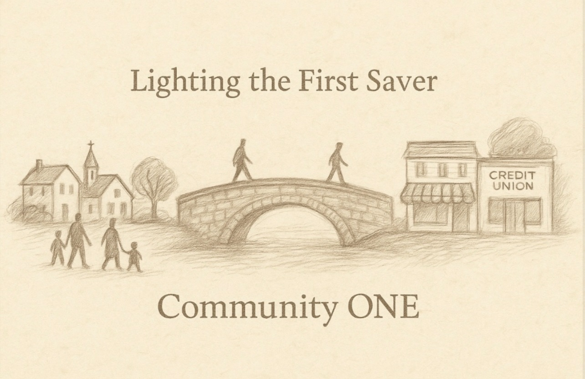
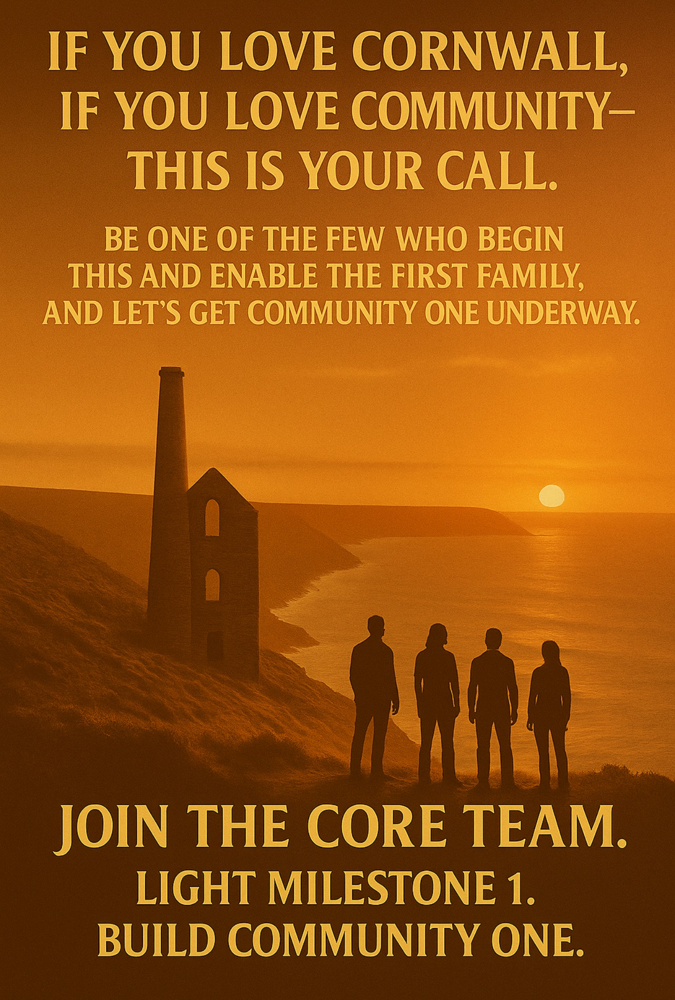

Milestone 1 – Saver One
Somewhere in Cornwall, one saver waits for dignity to cross the bridge. The Chairperson of Heart steps forward to light this first action — a human being doing what they have never been able to do before: save with honour.

Every movement begins with a single saver. Each milestone marks the expansion of community, dignity and capability — until restoration becomes routine.
Somewhere in Cornwall, one saver waits for dignity to cross the bridge. The Chairperson of Heart steps forward to light this first action — a human being doing what they have never been able to do before: save with honour.
Community One forms. The system comes to life in real-time transactions that restore the Charity That Is Not Spent fund after each use. Technology meets trust.
Ten people, ten proofs that dignity scales. At this point the architecture can be shown to partners, churches, and local credit unions as a living model.
Momentum. The Chairperson’s belief is met by community recognition. The first core team now has a local voice and a story to tell.
Bridge Across Community (CIC) takes root as a structure of inclusion. Retail participation and saver confidence reach critical mass.
The model is proven. The Community Savings Solution Ltd engine now operates at scale — data, transactions, and impact reports ready for national expansion.
The architecture shows resilience. The Charity That Is Not Spent fund remains intact — a permanent pool for empowerment and restoration (COPPER).
Replication begins. Stage Two communities can adopt the system. From Cornwall to the nation, the architecture becomes an asset class of hope.

Execution is everything. John Doerr’s OKR framework guides each milestone — objectives aligned with key results that turn belief into measurable change.
Learn More About OKRs